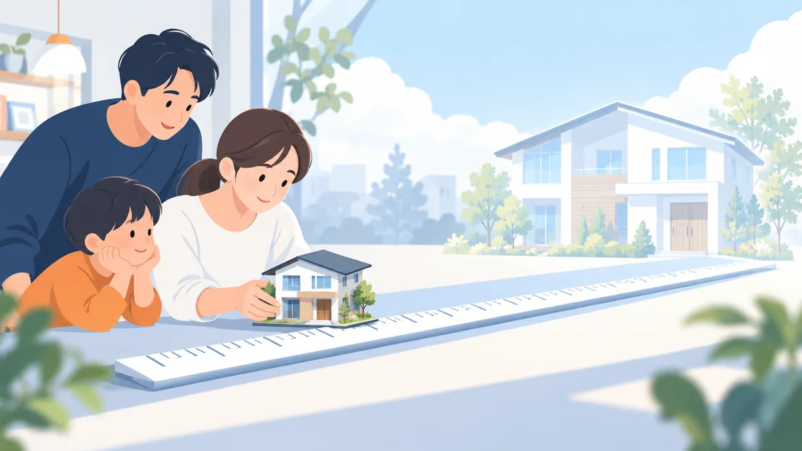

物件価格の決め方。借入可能額と返せる額の違い、逆算の手順

物件探しを始めると、「いくらまで借りられるか」を先に知りたくなります。しかし、金融機関が検討する上限（借入可能額）と、ご家庭が無理なく返せる額は別の数字です。上限で物件を選ぶと、購入後の家計が苦しくなりやすいです。この記事では、返せる額から物件価格の上限を逆算する手順を整理します。今週の親記事 頭金がない場合の住宅購入の資金計画 の関連記事で、今週のまとめにあたります。
- 計算例の数値は考え方を説明するための仮のものです。金利・条件は金融機関ごとに異なります。
- 返せる額はご家庭の支出と将来の予定によって変わります。
借入可能額と返せる額の違い
| 借入可能額 | 返せる額 | |
|---|---|---|
| 誰が決めるか | 金融機関 | ご家庭 |
| 基準 | 年収に対する返済の割合（返済負担率）の上限 | 毎月の家計から無理なく出せる額 |
| 考慮するもの | 年収、既存のお借入れ、返済期間、計算用の金利 | 生活費、教育費、車の買い替え、貯蓄、購入後の維持費 |
| 傾向 | 返せる額より大きくなりやすい | 借入可能額の 7〜9 割程度に収まることが多い |
返せる額から逆算する 4 つの手順
手順 1: 毎月の「住まいに使える額」を決める
いまの家賃と、購入後に増えても受け止められる額を足して、住まいに使える月額の上限を決めます。たとえば家賃 8 万円で、月 2 万円までなら増えても大丈夫なら、上限は 10 万円です。
手順 2: 維持費を差し引く
購入後は、管理費・修繕積立金（または修繕の積立）、固定資産税、保険が毎月かかります。合計 2.5 万円なら、住宅ローンの返済に使えるのは 10 万円 − 2.5 万円 ＝ 7.5 万円です。比較の方法は 家賃と住宅ローンの毎月の支払いを比較する方法 をご覧ください。
手順 3: 返済額から借入額を求める
適用金利 年 1.5%・35 年なら、100 万円あたりの毎月の返済額は約 3,060 円です。7.5 万円 ÷ 3,060 円 × 100 万円 ＝ 約 2,450 万円が、返せる借入額です。
手順 4: 頭金と諸費用を足し引きして物件価格にする
物件価格 ＝ 返せる借入額 ＋ 頭金 − 諸費用（住宅ローンに含める場合はゼロ）。頭金なし、諸費用（約 8%）を住宅ローンに含める場合は、2,450 万円 ÷ 1.08 ＝ 約 2,270 万円が物件価格の上限です。
計算例のまとめ
- 住まいに使える月額: 10 万円
- 維持費: 2.5 万円 → 住宅ローン返済に使える額: 7.5 万円
- 返せる借入額（年 1.5%・35 年）: 約 2,450 万円
- 頭金なし・諸費用込みの物件価格の上限: 約 2,270 万円
同じ家庭で、年収 400 万円・返済負担率 35% の借入可能額を計算すると約 3,000 万円になります。借入可能額で探すと、返せる額より 700 万円以上高い物件を見てしまうことになります。
既存のお借入れがある場合
カードローンや車のローンの返済が続く場合、手順 1 の「住まいに使える額」から、その返済額も差し引く必要があります。月 3 万円の返済があれば、住宅ローンに使える額は 7.5 万円 − 3 万円 ＝ 4.5 万円になり、返せる借入額は約 1,470 万円まで下がります。
この差が大きい場合、既存のお借入れを先に整理する、住宅の取得と合わせて既存のお借入れの返済資金を検討できる商品を使う、という選択肢が現実的になります。考え方は 手元資金をお借入れの整理と頭金のどちらに使うか と 商品の型と条件の見方 をご覧ください。
物件価格の上限を決めるときの注意
- 将来の支出を入れる。 教育費のピーク、車の買い替え、親の介護など、10〜20 年先の支出を見込む。
- 収入が減る時期を想定する。 育児・転職・病気などで収入が一時的に減っても返せるか。
- 金利の上昇を見込む。 変動金利なら、金利が上がった場合の返済額も試算しておく。
- 上限で買わない。 返せる額の 9 割程度に収めると、予期しない出費に対応できる。
今週のまとめ
- 頭金がなくても検討はできる。ただし予備費と諸費用の出所を先に決める。
- 諸費用は物件価格の 5〜10%。含められるかは金融機関次第。
- 家賃と比べるときは、維持費まで足した「購入後の毎月の支払い」で比べる。
- 手元資金は、予備費 → 金利の高いお借入れの整理 → 頭金の順に使う。
- 控除の対象は住宅の取得に充てた部分だけ。
- 物件価格は借入可能額ではなく、返せる額から逆算する。